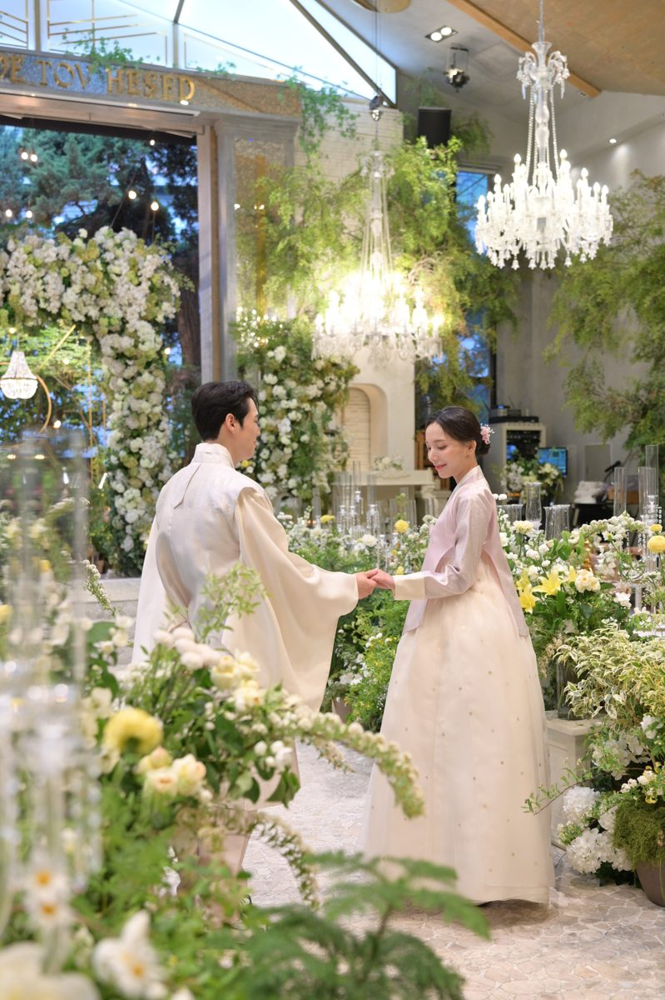

사진: 네이버 플레이스 업체 사진
200명 정가 1,700만대관 300만 + 식대 7만 × 200명
가까운 역 신논현역 406m직선거리
최소 보증 60~150명후기 기준 생화 장식과 꽃향기, 셔틀·발렛, 3시간 30분 단독 대관을 칭찬하는 후기가 대부분이에요. 다만 후기 이벤트로 쓴 비슷한 문구의 글이 많고 하객이 쓴 후기는 없어요. 계약 전에 시식할 수 없다는 점과 역에서 오는 마지막 골목이 오르막이라는 점을 일부 부부가 아쉬워했어요.
생화 장식과 꽃향기가 좋다 3시간 반 단독 대관이 여유 셔틀·발렛으로 오기 편하다 역에서 오르막 경사가 있다 계약 전 시식이 안 된다 ATM이 없다 후기를 읽고 매긴 점수 4.1 · 카카오맵 4.9 (532명) · 네이버 4.94 (4명)
확인할 것 계약 전에는 시식할 수 없어요. 메뉴 구성을 직접 확인하고, 하객에게 셔틀 타는 곳과 발렛 이용법을 미리 알려 주세요. 연회장은 지하에 있고 크지 않아요.
예약 네이버 예약으로 상담 예약하거나 전화 0507-1407-3676. 해외 거주자는 줌 상담·카톡 문의 가능
네이버 지도 카카오맵 홈페이지 네이버 예약 웨딩킹 후기 항목별 점수 홍보 글: 후기 이벤트로 쓴 비슷한 문구의 글이 카카오 60건 중 약 22건이에요. 하객이 쓴 카카오 후기는 없어요.
사진: 네이버 플레이스 업체 사진
200명 정가 1,600만대관 200만 + 식대 6.75만 × 200명 + 디렉팅 50만
가까운 역 역삼역 485m직선거리
최소 보증 100명후기 기준 부부 후기는 음식이 맛있고 꽃장식과 파티 같은 하우스웨딩 분위기가 좋다는 평이 많아요. 다만 신부대기실과 화장실이 좁고, 반야외라 비나 더위의 영향을 받는다는 지적이 있어요. 하객 1명은 오르막길과 좁은 공간을 혹평했어요.
음식이 맛있다 하우스웨딩 분위기가 예쁘다 진행이 꼼꼼하고 친절하다 대기실·화장실이 좁다 반야외라 비·더위 영향 주차장이 언덕 위에 있다 후기를 읽고 매긴 점수 4.2 · 카카오맵 3.4 (9명)
확인할 것 하객 100~150명 규모에 맞는 곳이에요. 신부대기실·화장실 크기, 비 오는 날과 더운 날 대비책, 친구 하객의 식사 순서를 상담 때 확인하세요.
예약 전화 02-562-6936 또는 카카오톡 채널(아모르하우스)로 방문 상담 예약. 네이버 예약 없음
네이버 지도 카카오맵 홈페이지 웨딩킹 후기 항목별 점수 홍보 글: 카페 8건 중 2건은 업체 링크·후기 혜택이 들어간 글, 블로그 4건은 홍보성
사진: 오드힐하우스 홈페이지
200명 정가 3,100만대관 1,200만 + 식대 9.5만 × 200명
가까운 역 방배역 301m직선거리
최소 보증 100명후기 기준 2026년 3월에 문을 연 새 단독홀이에요. 방배역에서 걸어서 5분 거리이고 주차가 넉넉하며, 2시간 간격 단독 예식과 밝은 화이트톤 홀을 칭찬하는 후기가 많아요. 다만 대부분 조감도만 보고 계약한 사람들이 쓴 글이라 실제 본식 후기는 아직 적어요.
화이트톤 홀이 밝고 깔끔 방배역 가깝고 주차 편하다 단독홀·2시간 간격이 여유 홀이 작고 버진로드 짧다 의자에 등받이가 없다 층이 나뉜 연회장 동선 후기를 읽고 매긴 점수 4.0 · 카카오맵 4.8 (25명)
확인할 것 본식 후기가 적어요. 등받이 없는 의자, 층이 나뉜 연회장 동선(엘리베이터), 하객 식사시간을 투어 때 확인하세요.
예약 네이버 예약으로 상담 예약(주말 상담, 전화 확인 후 확정) 또는 전화 0507-1410-5038
네이버 지도 카카오맵 홈페이지 네이버 예약 웨딩킹 후기 항목별 점수 홍보 글: 글·댓글 작성 시 50만원 추가 할인 조건이 있어 카페 후기 상당수가 혜택 연계로 보임
사진: 네이버 플레이스 업체 사진
200명 정가 3,000만대관 1,000만 + 식대 10만 × 200명
가까운 역 양재역 149m직선거리
최소 보증 200명후기 기준 계약하거나 시식한 부부들은 밥블레스라 불리는 뷔페, 양재역 직결 교통, 단독홀을 이유로 골라요. 반면 하객 후기에서는 피로연 시간이 짧아 식사 중에 나가라고 재촉받았다는 불만이 가장 많아요(카카오 30건 중 9건).
뷔페 음식이 맛있다 양재역 직결·주차 넉넉 단독홀이라 붐비지 않는다 하객 식사시간이 짧다 홀·지하 공간이 좁다 음식이 별로였다 후기를 읽고 매긴 점수 3.5 · 카카오맵 3.2 (30명)
확인할 것 피로연장 이용시간을 꼭 확인하세요. 사진 촬영 뒤 들어간 하객은 30~40분밖에 먹지 못했다는 불만이 많아요(2023~2024년 후기 기준).
예약 전화 02-526-0300 또는 카카오톡 채널(엘블레스)로 상담 예약. 네이버 예약 없음, 홈페이지 elbless.com
네이버 지도 카카오맵 홈페이지 웨딩킹 후기 항목별 점수 홍보 글: 블로그 4건 중 2건은 업체·추천 포인트 글. 카페 글 다수는 견적공유 불가 계약 직후 후기
사진: 네이버 플레이스 업체 사진 성남시 분당구 판교 · 채플홀·그레이스홀
W스퀘어컨벤션 ★ 5위 · 62점
200명 정가 2,180만대관 700만 + 식대 6.9만 × 200명 + 지정 스냅 100만
가까운 역 판교역 669m직선거리
최소 보증 150명후기 기준 직접 다녀온 블로그 후기는 층고 높은 채플홀과 넓은 연회장을 좋게 봐요. 하지만 투어한 커플 2명은 본식스냅 별도 비용, 낡은 건물, 좁은 로비, 역에서 먼 거리 때문에 계약하지 않았어요. 2023년까지의 카카오 하객 후기에는 음식이 별로라는 평이 많아요.
뷔페와 연회장이 좋다 채플홀이 예쁘고 층고 높다 주차가 넉넉하고 무료다 음식이 맛없다 로비가 좁고 동선 불편 엘리베이터·직원 응대 불편 후기를 읽고 매긴 점수 3.3 · 카카오맵 2.9 (14명) · 네이버 4.36 (101명)
확인할 것 본식스냅 약 100만원이 따로 붙는지, 로비와 입장 대기 공간, 비 올 때 야외 공간을 못 쓰는 점을 계약 전에 확인하세요
예약 전화 031-703-0116, 카카오톡 채널 채팅, 홈페이지 w-square.kr. 판교역 1번 출구에서 셔틀 운행
네이버 지도 카카오맵 홈페이지 항목별 점수 홍보 글: 카페 후기 없음. 블로그 5건 중 2건은 웨딩 카페 포인트를 받은 글
사진: 네이버 플레이스 업체 사진
200명 정가 2,730만대관 950만 + 식대 8.9만 × 200명
가까운 역 선정릉역 447m직선거리
최소 보증 200명후기 기준 하객과 계약 커플 대부분이 뷔페 음식의 종류와 맛, 생화로 꾸민 밝은 단독홀을 칭찬해요. 다만 홀이 150석 정도로 작고 지하라 답답하다는 말과 외부 주차장을 써야 한다는 불만이 있어요.
뷔페가 다양하고 맛있다 생화 장식 홀이 예쁘다 단독홀이라 여유롭다 홀이 작고 층고가 낮다 외부 주차장이라 불편 음식이 별로였다 후기를 읽고 매긴 점수 3.9 · 카카오맵 4.6 (107명)
확인할 것 보증인원은 200명인데 좌석은 150석 정도라 하객 수부터 따져 보세요
예약 전화 02-564-7031 또는 홈페이지·인스타로 상담 예약. 네이버 예약 없음, 월요일 휴무
네이버 지도 카카오맵 홈페이지 웨딩킹 후기 항목별 점수 홍보 글: 카카오 5점 후기 다수가 홍보 문구 같고, 1점 후기 2건이 후기 조작을 지적
사진: 네이버 플레이스 업체 사진
200명 정가 3,000만대관 1,000만 + 식대 10만 × 200명
가까운 역 선릉역 266m직선거리
최소 보증 200명후기 기준 계약 커플은 선릉역 3분 거리, 한 층에 모인 동선, 넉넉한 주차, 정찰제 가격을 좋게 봐요. 하객 후기는 2024년까지는 '밥펠가모'라며 음식 칭찬이 많았지만, 2026년 후기 4건은 모두 음식 종류가 적고 맛이 별로이며 직원이 불친절하다는 내용이에요.
음식이 맛있다 주차 공간이 넉넉하다 선릉역에서 가깝다 음식이 기대 이하다 주차 진입로가 좁고 가파름 직원 불친절, 공장식 운영 후기를 읽고 매긴 점수 3.2 · 카카오맵 3.2 (48명)
확인할 것 최근 하객 평이 나빠졌으니 주말 예식 시간에 투어해서 뷔페 구성과 식사 자리를 직접 보세요
예약 전화 02-2183-0230, 홈페이지, 카카오톡 채널 @아펠가모선릉. 상담 보증금 5만원, 당일 계약 혜택은 오후 5시까지
네이버 지도 카카오맵 홈페이지 웨딩킹 후기 항목별 점수 홍보 글: 카카오·카페 후기에 협찬 표시는 없음. 카카오 블로그 글은 홍보성이 섞임

사진: 네이버 플레이스 업체 사진
200명 정가 2,200만대관 600만 + 식대 8만 × 200명
가까운 역 학동역 545m직선거리
최소 보증 180명후기 기준 정원 같은 하우스웨딩 홀과 꽃장식이 예뻐 사진이 잘 나온다는 평이 많아요. 하지만 하객 쪽에서는 공간이 좁아 붐비고, 1층 뷔페와 2층 좌석을 계단으로 오가야 하며 전용 주차장이 없어 불편하다는 불만이 많아요.
홀이 예쁘고 사진이 잘 나옴 음식이 맛있다 직원이 친절하다 좁고 붐벼 하객 배려 없음 주차·교통이 불편 음식 질 낮음·배탈 후기를 읽고 매긴 점수 2.5 · 카카오맵 2.7 (48명)
확인할 것 100명만 넘어도 붐빈다는 하객 평이 있어요. 1층 뷔페와 2층 좌석 사이 계단 동선, 주차 사정을 투어 때 확인하세요.
예약 네이버 예약 booking.naver.com/booking/13/bizes/1726621, 전화 0507-1447-2446, tovhesed.com
네이버 지도 카카오맵 홈페이지 네이버 예약 웨딩킹 후기 항목별 점수 홍보 글: 블로그 2편 홍보(다이렉트 포인트·업체 공식), 카페 2편 양식 거의 동일, 2019년 5점은 후기 삭제 주장과 겹침
사진: 네이버 플레이스 업체 사진
200명 정가 2,912만대관 850만 + 식대 8.25만 × 250명
가까운 역 양재역 336m직선거리
최소 보증 250명후기 기준 양재역에서 가깝고 주차가 250대라 하객이 편하고, 밥이 맛있는 가성비 홀이라는 평이 많아요. 다만 지하라 홀이 작고 천장이 낮아서 하객이 많으면 답답하다는 의견이 있어요.
뷔페 음식이 맛있다 역 가깝고 주차 편리 강남권 가성비 좋다 지하라 홀이 작고 낮다 식 간격 짧아 붐빔 음식이 달고 딱딱하다 후기를 읽고 매긴 점수 3.9 · 카카오맵 4.0 (20명)
확인할 것 후기에 나온 보증인원이 250명이라 200명 이하로 가능한지 먼저 물어보세요. 공식 블로그에 2028년 8월 리뉴얼 예정이라고 나와 있으니 예식일과 공사 일정이 겹치는지도 확인하세요.
예약 전화 02-2058-0406, 홈페이지 bridevalley.co.kr, 공식 블로그 blog.naver.com/bvalleyinfo, 주말 투어
네이버 지도 카카오맵 홈페이지 웨딩킹 후기 항목별 점수 홍보 글: 블로그 4편 모두 업체 공식·플래너·다이렉트 포인트 홍보, 카페·카카오는 대체로 일반 후기
사진: 네이버 플레이스 업체 사진
200명 정가 4,145만대관 1,155만 + 식대 13만 × 230명
가까운 역 양재역 218m직선거리
최소 보증 230명후기 기준 2026년 계약 커플은 양재역 바로 앞 위치와 웅장한 홀을 높게 보고, 동시예식 코스 요리도 기대해요. 하지만 2024년까지의 하객 후기에는 기계식 주차 대기, 불친절한 직원, 붐비는 식사 공간에 대한 불만이 많고, 홀 변경을 거절당해 위약금을 낸 후기도 있어요.
코스 요리가 맛있다 양재역 바로 앞이다 홀이 웅장하고 예쁘다 직원이 불친절하다 식사 자리 부족, 혼잡 기계식 주차 대기가 길다 후기를 읽고 매긴 점수 3.3 · 카카오맵 3.4 (55명)
확인할 것 위약금이 할인 전 정가 기준이고 홀 변경이 안 될 수 있어 계약서를 꼭 확인하세요
예약 전화 02-526-8600(온라인보다 빠름), 카카오톡 채널 @엘타워. 예약 오픈일은 인스타에 공지
네이버 지도 카카오맵 홈페이지 웨딩킹 후기 항목별 점수 홍보 글: 협찬 표시는 없지만 4월 열흘 사이 칭찬 일색 카페 후기 7건이 몰려 있음